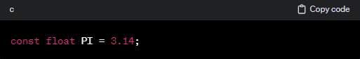
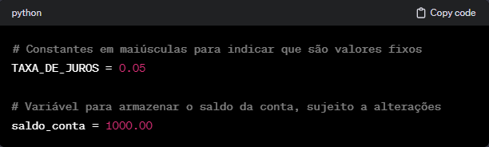

Definição: Uma variável é um espaço de armazenamento com um nome simbólico (um identificador) e um tipo associado. O valor armazenado em uma variável pode ser modificado durante a execução do programa.
Exemplo em Python:
No exemplo acima, idade e nome são variáveis que armazenam um valor inteiro e uma cadeia de caracteres, respectivamente. O valor dessas variáveis pode ser alterado ao longo do programa.
Constantes
Definição: Uma constante é um valor que não pode ser alterado durante a execução do programa. Geralmente, as constantes são usadas para representar valores fixos e conhecidos que não devem ser modificados.
Exemplo em C:

Neste exemplo, PI é uma constante que representa o valor de π (pi). O uso da palavra-chave const indica que o valor da variável não pode ser alterado após a sua inicialização.
Diferenças
Mutabilidade: Variáveis podem ser modificadas ao longo do programa, enquanto constantes não podem ser alteradas após a sua atribuição inicial.
Declaração e Inicialização: As variáveis geralmente precisam ser declaradas e inicializadas explicitamente, enquanto as constantes, dependendo da linguagem, podem exigir apenas a inicialização.
Uso e Intenção: O uso de constantes é comum para valores que não devem ser alterados e que têm um significado fixo no contexto do programa. Variáveis, por outro lado, são usadas para armazenar valores que podem mudar.
Exemplo de Boa Prática:

Essa distinção entre constantes e variáveis é importante para manter o código claro, legível e para evitar erros inadvertidos ao tentar modificar valores que deveriam ser fixos. Em alguns casos, linguagens de programação podem impor regras estritas para constantes, enquanto outras oferecem flexibilidade.